Joulukonserttikuvaus
Koko tilaisuus taltioidaan: valmistautuminen, esiintyjät, yleisö ja kirkon tai salin tunnelma joulun aikaan.
Konserttikuvaus
Kuvaan konsertteja — etenkin joulukonsertteja. Kuvissa näkyy esiintyjä, yleisö, tila ja valo.
Galleria
Valikoima kuvia joulukonserteista Tikkurilan, Vihdin, Johanneksen ja Lauttasaaren kirkoista. Mukana yleiskuvia tilasta ja yleisöstä sekä lähikuvia artisteista.
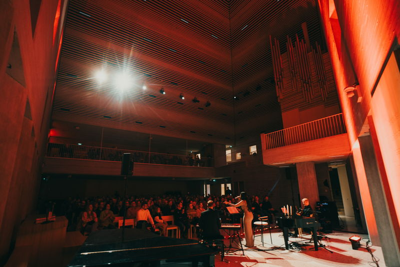
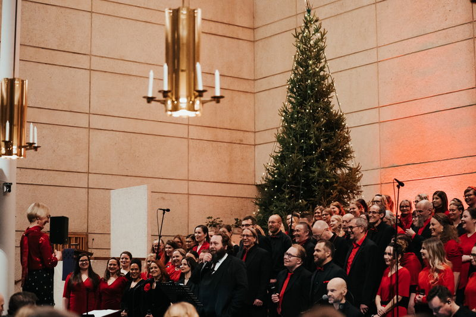
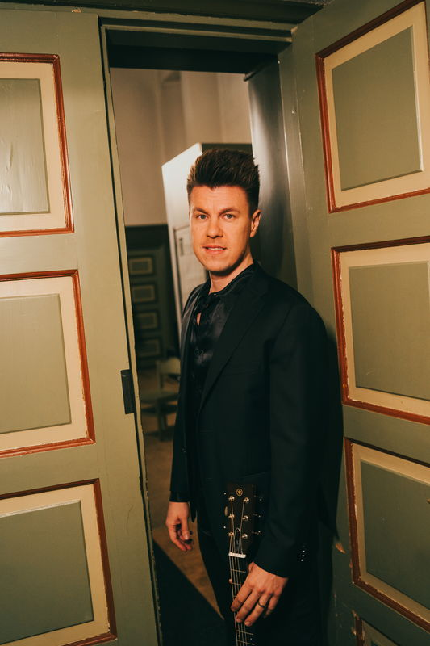
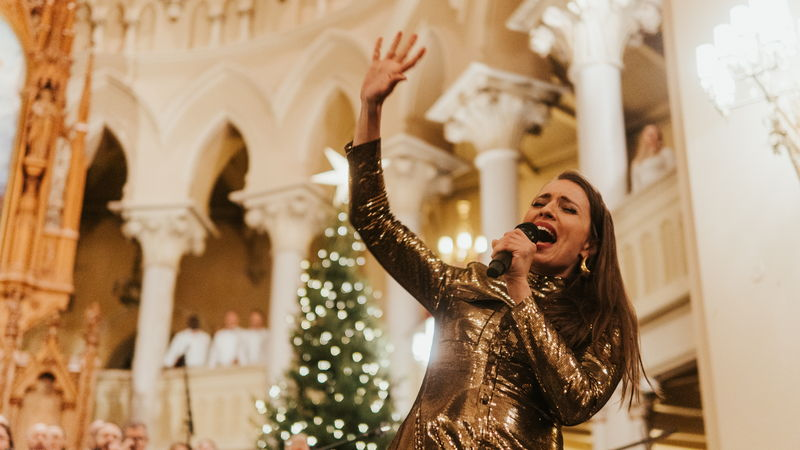
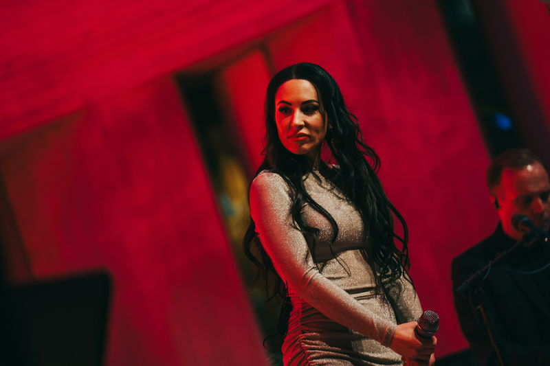
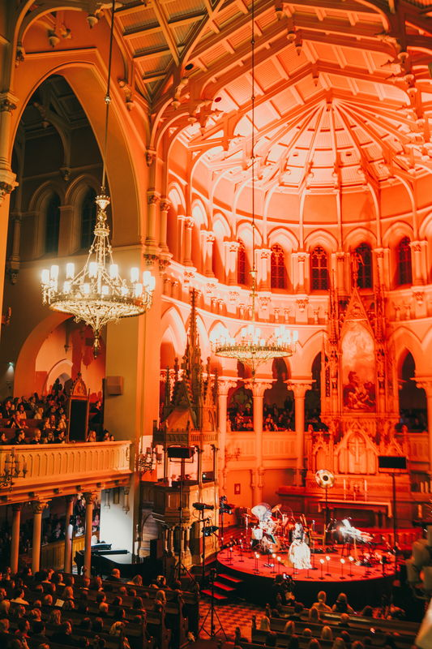
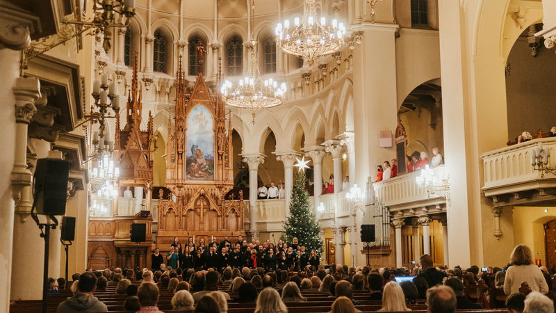
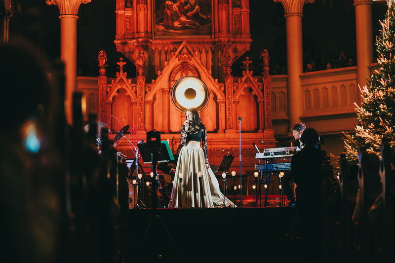
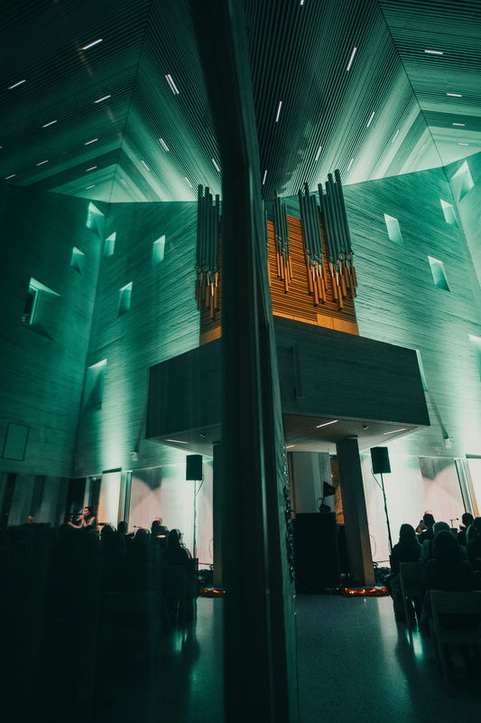
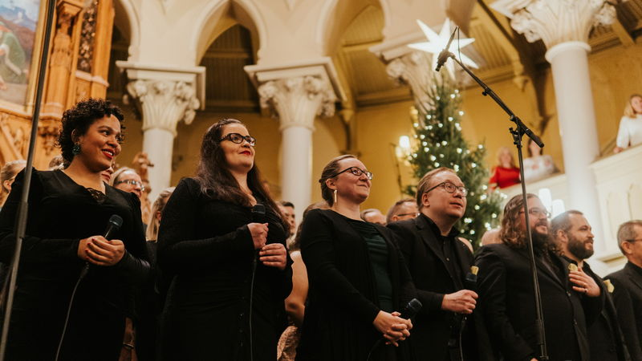
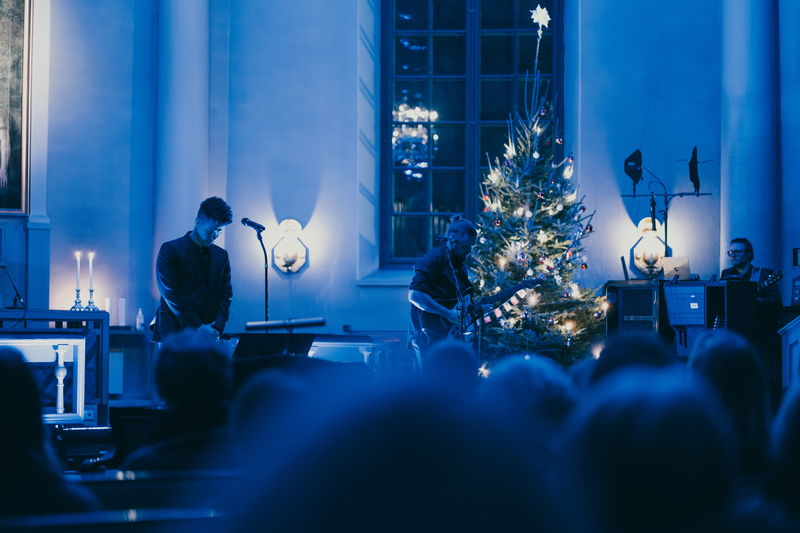
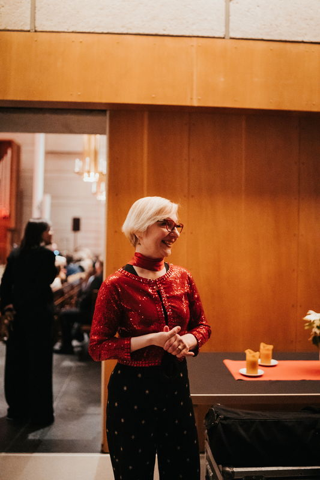
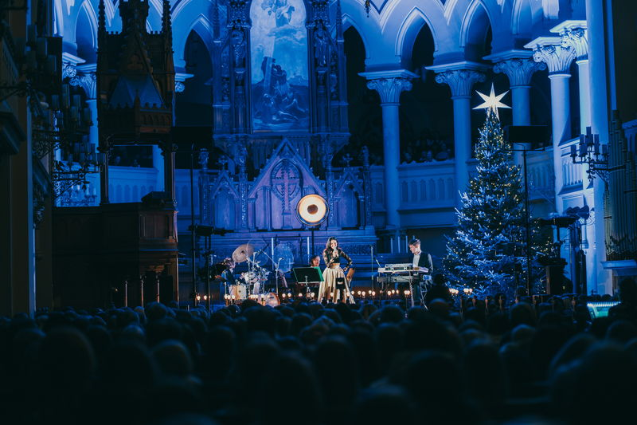
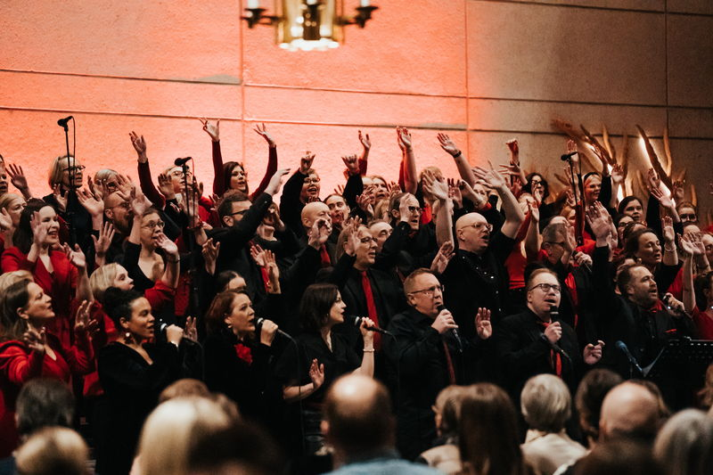
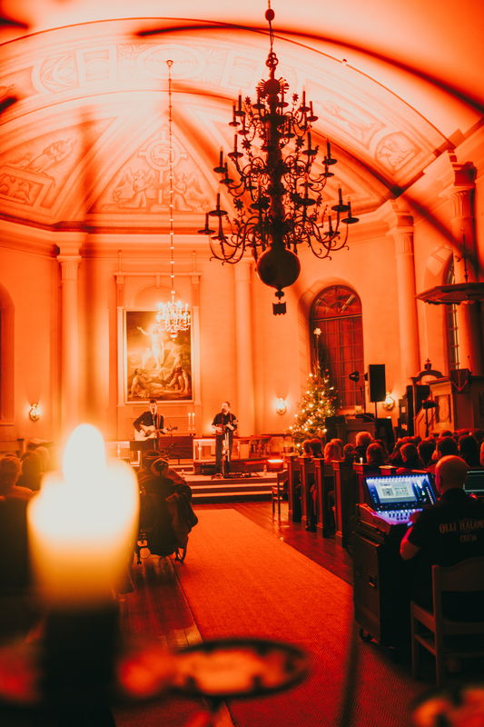
Joulun 2026 erikoistarjous
300 € + alv
Yksi selkeä paketti joulukonsertin kuvaamiseen. Hinta sisältää seuraavaa:
Kuvien muokkaukseen (editointityyliin) asiakas ei voi vaikuttaa. Toimitan kuvat yhtenäisellä, omaan tyyliini editoituna.
Varaa joulukonsertin kuvausPalvelut
Koko tilaisuus taltioidaan: valmistautuminen, esiintyjät, yleisö ja kirkon tai salin tunnelma joulun aikaan.
Kuvaan konsertteja kirkoissa ja esiintymistiloissa. Tavoitteena on kuva, jossa valo, arkkitehtuuri ja esiintyjä kohtaavat. Katso konserttikuvagalleria.
Ennen konserttia ehditään ottaa potretteja artistista tai kokoonpanosta — rauhallisemmassa valossa, osana samaa kuvausta.
Olen valokuvaaja Ville Huuri. Kuvaan konsertteja tilanteissa, joissa tila ja valo ovat yhtä tärkeitä kuin esiintyjä. Tämä sivu keskittyy erityisesti joulukonserttikuvaukseen.
Yhteys
Kerro konsertin ajankohta, paikka ja mahdolliset toiveet, niin palataan asiaan. Yhteystiedot lisätään tähän luonnokseen myöhemmin.